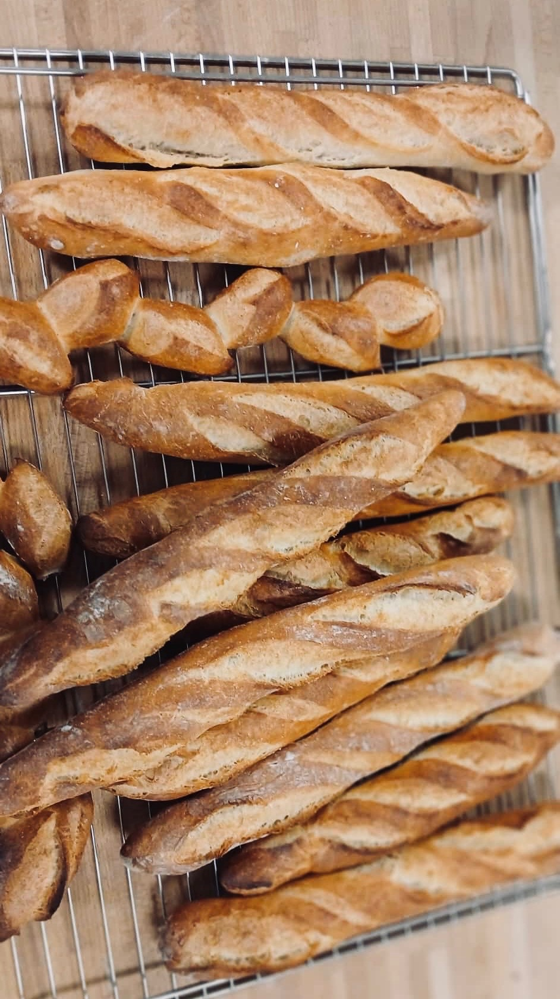
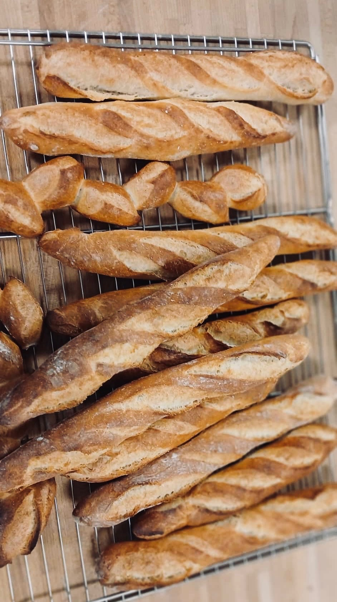

Le Secret de notre Baguette
Chez nous, la baguette est bien plus qu'un simple pain. C'est le fruit d'une passion et d'un savoir-faire unique, transmis de génération en génération.
Elle naît de la rencontre d'une farine d'exception et d'un temps de fermentation parfait, qui lui confère ses arômes si particuliers. À la sortie du four, sa croûte dorée et irrésistiblement croustillante fait place à une mie aérée et fondante en bouche.
Chaque bouchée est une invitation à savourer l'authentique tradition. Une pure gourmandise, simplement parfaite.

Découvrez nos créations
Si notre baguette est le cœur de notre savoir-faire, nos créations ne cessent d'émerveiller les yeux et les papilles. Chaque jour, notre équipe de passionnés s'applique à réinventer la tradition, en puisant son inspiration dans la richesse des saisons et le respect des ingrédients.
Laissez-vous guider par vos sens et découvrez une symphonie de saveurs. Des éclairs au chocolat intense aux tartelettes aux fruits fraîchement cueillis, en passant par les macarons aux teintes délicates, chaque pâtisserie est une promesse de pur bonheur.
Nous croyons que la beauté se déguste. C'est pourquoi chaque pièce est pensée comme une œuvre unique, où la précision du geste rencontre l'audace de la création.


Nos Pâtisseries
L'art de la pâtisserie est une alchimie de délicatesse et de gourmandise. Dans notre atelier, chaque gâteau, chaque chou à la crème et chaque éclair est une ode à la finesse et à la tradition. Nos mains s'appliquent à transformer des ingrédients simples en de véritables chefs-d'œuvre sucrés. Nous croyons que la pâtisserie est plus qu'un dessert ; c'est un voyage sensoriel qui éveille les souvenirs d'enfance et crée de nouveaux moments de plaisir.
De nos classiques indémodables comme le mille-feuille croustillant ou la tarte au citron meringuée à nos créations saisonnières audacieuses, chaque pièce est un équilibre parfait entre tradition et innovation. Nous marions les saveurs classiques et les touches d'originalité pour que chaque dessert raconte une histoire. Laissez-vous tenter par le **"Trois Chocolats"**, un trio de mousses soyeuses, ou par notre **"Craquant Pistache"**, un cœur de praliné onctueux.
Chaque création est conçue avec des ingrédients de première qualité, sélectionnés avec soin pour leur goût exceptionnel. Nous travaillons avec des producteurs locaux pour garantir la fraîcheur et l'authenticité de nos fruits et de nos produits laitiers.
Dans notre boulangerie, nous nous engageons à offrir une expérience de dégustation inoubliable, où chaque bouchée est un pur bonheur. Venez découvrir la finesse de notre savoir-faire et laissez-vous surprendre par l'explosion de saveurs de nos créations.
 

Notre Histoire
L'histoire de la Boulangerie Lucas & Co est avant tout une histoire de famille. C'est la passion d'un grand-père pour le bon pain qui a allumé la flamme, transmise de génération en génération.
Aujourd'hui, nous perpétuons cette tradition avec le même amour des matières premières et le même respect pour le travail bien fait, célébrant le goût authentique de notre terroir.
La Galerie Photo
Parfois, une image vaut mille mots. Nous vous invitons à découvrir notre univers en images. De la farine qui s'envole à la sortie des fournils, nos photos capturent la magie et la passion qui animent notre boulangerie au quotidien.
Nos Engagements
Nous nous engageons à utiliser des ingrédients locaux et de saison, à respecter des méthodes artisanales, et à réduire notre impact environnemental. Ouvert tous les jours de 7h à 19h, sauf lundi.
Contact
Une question, une commande spéciale ou juste envie de papoter ? Écrivez-nous, notre équipe vous répondra avec plaisir !